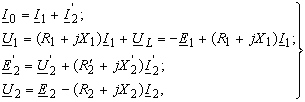
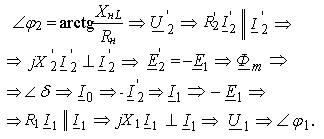

Соотношения между электрическими величинами в реальном трансформаторе и в его аналоге - в электрической схеме замещения описываются уравнениями одинакового типа. Запишем систему уравнений по первому и второму законам Кирхгофа для схемы замещения (рис. 7.3)
|  | (7.8) |
Построение векторной диаграммы удобно начать с вектора тока I'2, произвольно выбрав его направление. Дальнейшее построение ВД выполнено в следующей последовательности:
 |
 Векторная диаграмма трансформатора позволяет наглядно увидеть соотношения и углы сдвига фаз между различными величинами. Если векторную диаграмму напряжений построить в одном масштабе, то из сравнения длин векторов следует, что падения напряжений в обмотках силовых трансформаторов даже при номинальных значениях токов I1н и I2н не превышают 5% от напряжений U1н и U2н, т. е. |
Ток I1 в первичной обмотке возрастает от значения тока I0 до номинального значения I1н ровно настолько, чтобы скомпенсировать размагничивающее действие вторичного тока I2 и сохранить магнитный поток Ф неизменным.
Значение тока холостого хода I0 в силовых трансформаторах мощностью S = 50...1000 кB·A не превышает 2...5% от номинального тока I1н; однако в маломощных трансформаторах он может достигать 30% от I1н и более.